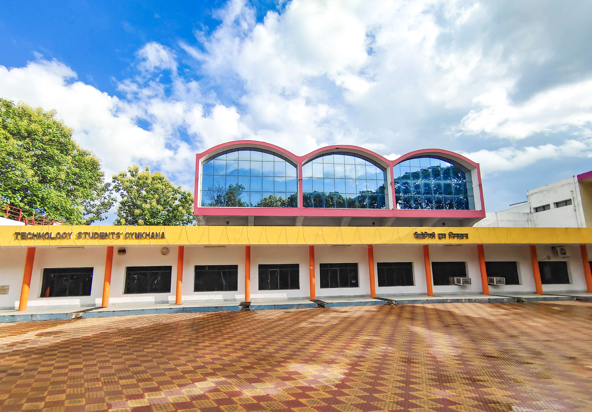

Main building

The prestigious building of the IIT kgp building that most of the JEE
aspirants wish for.The first place i visited and felt happy.
Technolgy Students' Gymkhana
The place is the hub of numerous extra curricular and co curricular activitieson IIT KGP.This the place where we celebrates our friends birthday.

Clock Tower

A gift from the batch of 1970. This is the place which i see everyday in the campus.